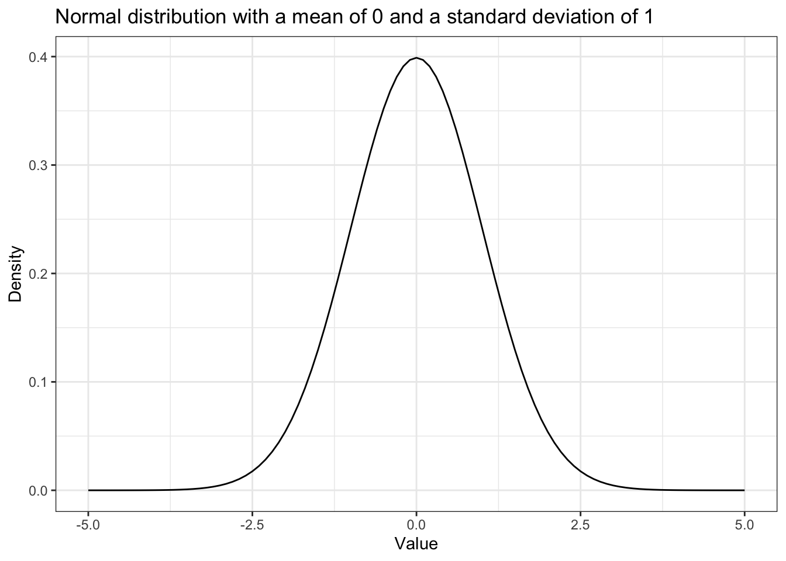
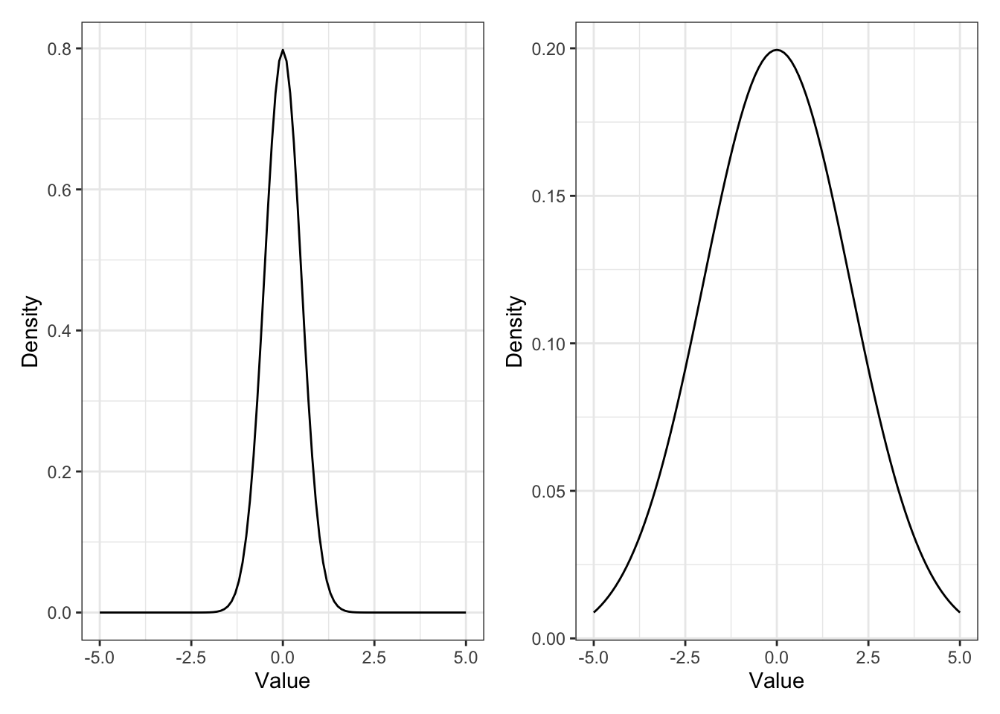
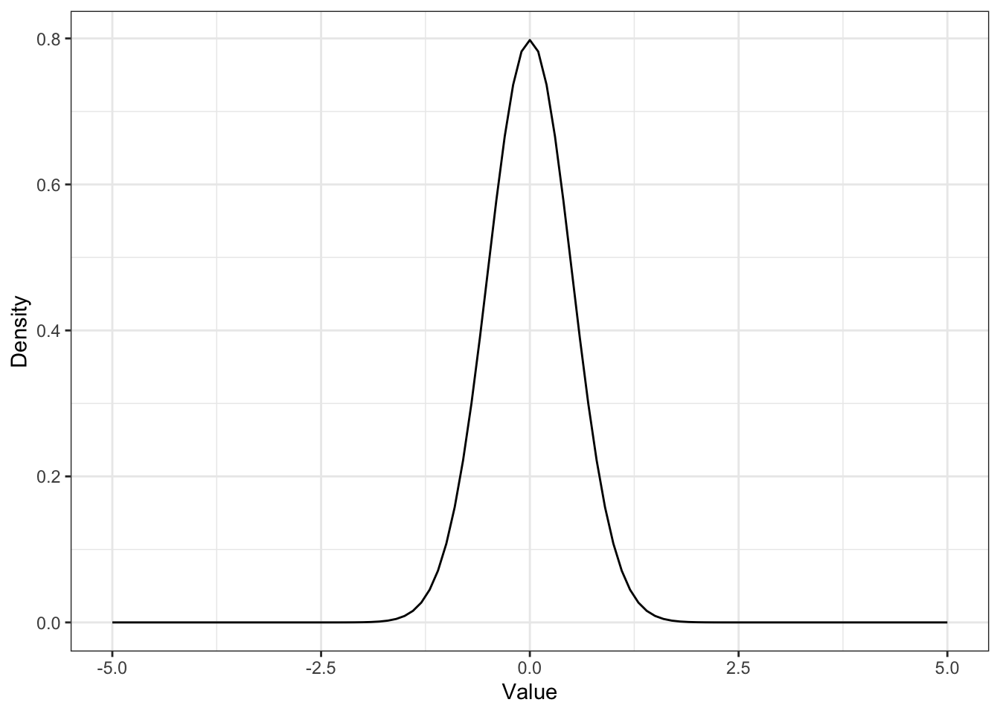
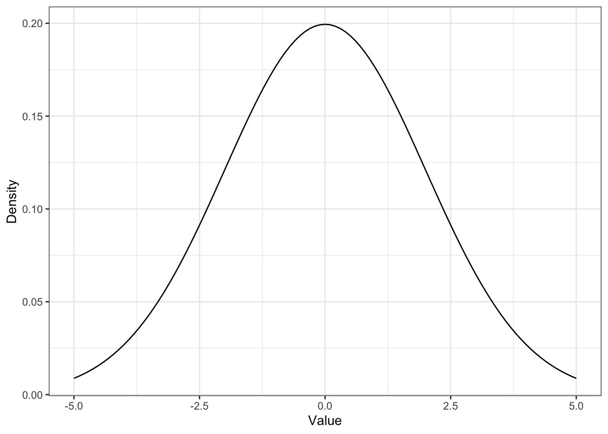
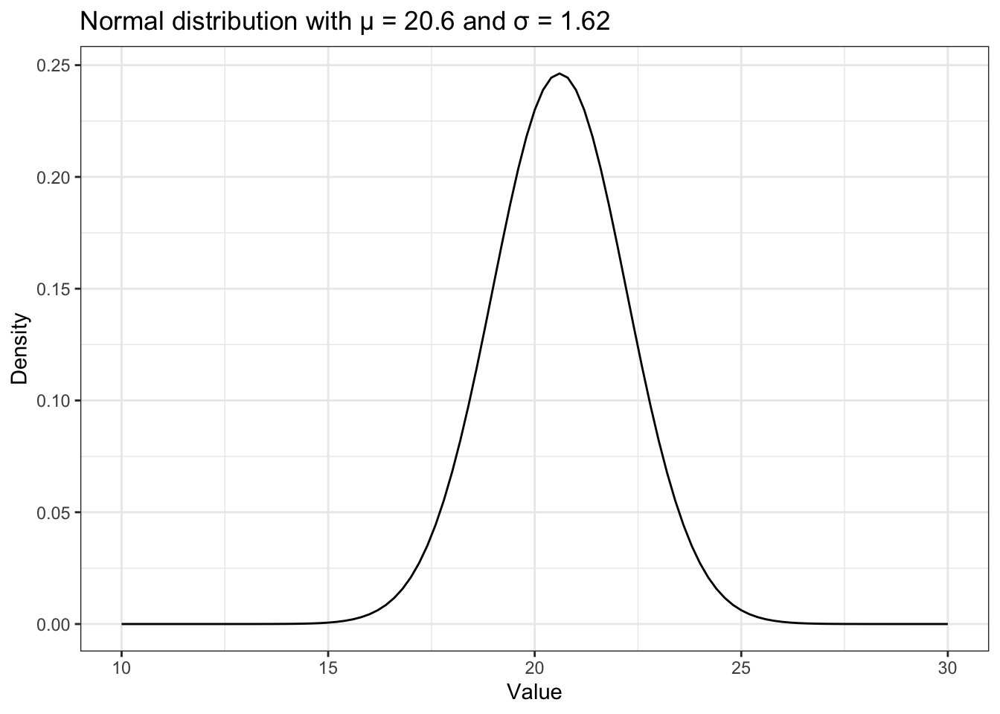
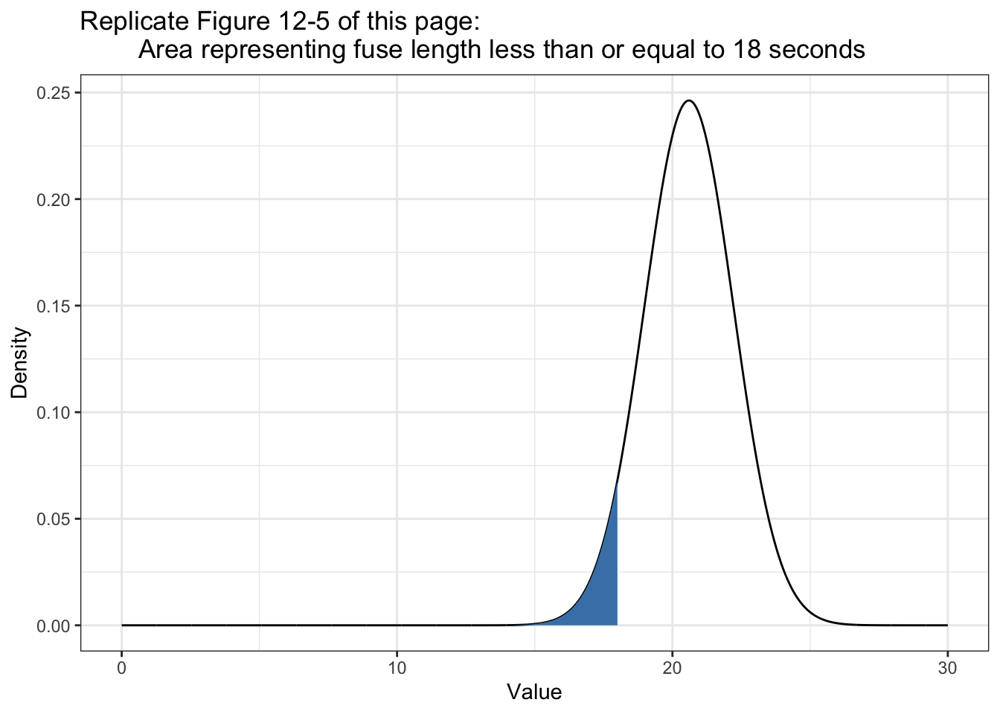
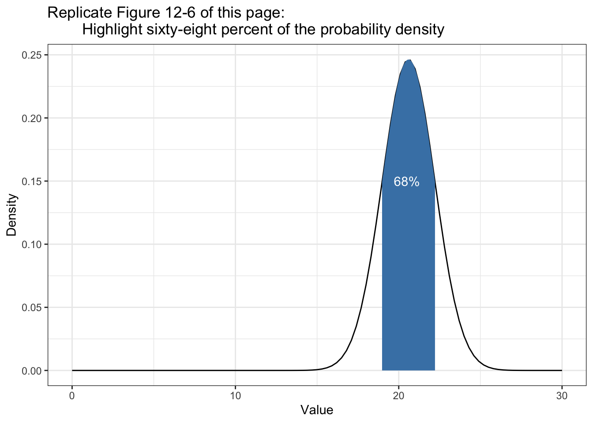
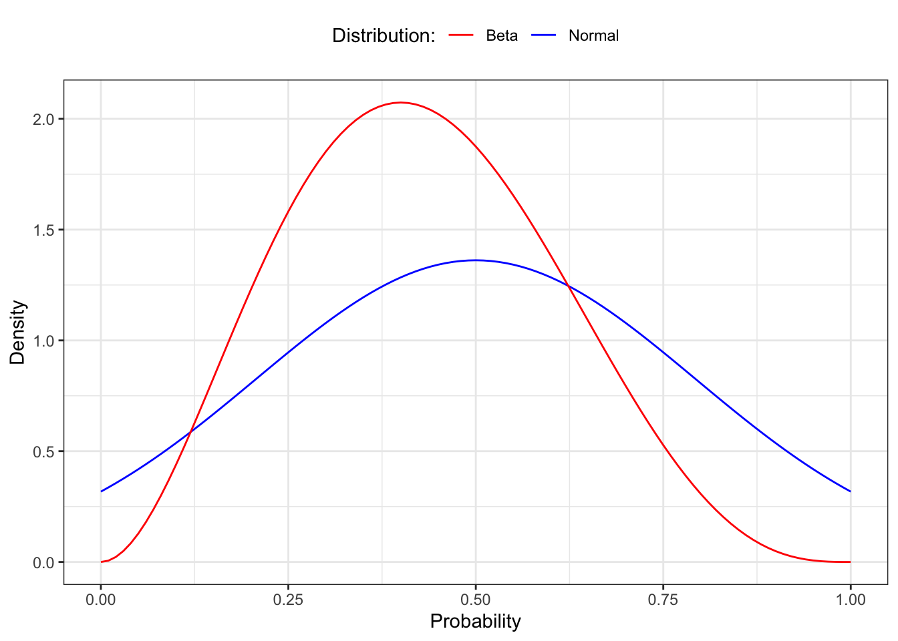

[1] 20.612 The Normal Distribution
12.1 Measuring Fuses for Dastardly Deeds
Setting up fuses and measuring how long it takes them to burn through to make sure one has 18 seconds to get away. The times recorded (in seconds) for each fuse to burn through are: 19, 22, 20, 19, 23.
Calculating the mean gives us μ = 20.6, and calculating the standard deviation gives us σ = 1.62.
Keep in mind that R computes the standard deviation dividing by \(n - 1\) instead of just \(n\) as in the book. so we have to use again our own function as developed in Listing lst-compute-sd.
[1] 1.8165912.2 The Normal Distribution
The normal distribution is a continuous probability distribution (like the beta distribution in sec-beta-distribution) that best describes the strength of possible beliefs in the value of an uncertain measurement, given a known mean and standard deviation. (104)


12.3 Solving the Fuse Problem

What is the probability, given the data observed, that the fuse will run for 18 seconds or less?

The area of the shaded region represents the probability of the fuse lasting 18 seconds or less given the observations. Notice that even though none of the observed values was less than 18, because of the spread of the observations, the normal distribution in Figure fig-12-06 shows that a value of 18 or less is still possible.
By integrating over all values less than 18, we can calculate the probability that the fuse will not last as long as our villain needs it to.
We can see that the line in the PDF is nearly flat at 10, meaning there is virtually no probability in this region, so we can just integrate from 10 to 18. We could also choose a lower value, like 0, but because there’s effectively no probability in this region, it won’t change our result in any meaningful way.
I am using 0, because this value is more intuitive for me.
0.05425369 with absolute error < 3.5e-05The same result but a smaller error in my version: < 3e-11 vs. < 3.5e-05
Rounding the value, we can see that
P(fuse time < 18) = 0.05, telling us there is a 5 percent chance that the fuse will last 18 seconds or less.
12.4 Some Tricks and Intuitions
For any normal distribution with a known mean and standard deviation, you can estimate the area under the curve around
μin terms ofσ.
Distance from the mean
-
1σ: 68% -
2σ: 95% -
3σ: 99,7%

This little trick is very useful for quickly assessing the likelihood of a value given even a small sample. … Even when we do want to use R to integrate, this trick can be useful for determining a minimum or maximum value to integrate from or to.
12.5 “N Sigma” Events
“the fall of the stock price was an eight-sigma event.” What this expression means is that the observed data is eight standard deviations from the mean. We saw the progression of one, two, and three standard deviations from the mean, which were values at 68, 95, and 99.7 percent, respectively. You can easily intuit from this that an eight-sigma event must be extremely unlikely.
Warning
If you ever see data that is 5 or more standard deviation away from the mean: Check you distribution because it could be a that your data didn’t come from a normal distribution.
12.6 The Beta Distribution and the Normal Distribution
You may remember from sec-beta-distribution that the beta distribution allows us to estimate the true probability given that we have observed
αdesired outcomes andβundesired outcomes, where the total number of outcomes isα + β. Based on that, you might take some issue with the notion that the normal distribution is truly the best method to model parameter estimation given that we know only the mean and standard deviation of any given data set. After all, we could describe a situation whereα = 3andβ = 4by simply observing three values of1and four values of0. This would give usμ = 0.43andσ = 0.53. We can then compare the beta distribution withα = 3andβ = 4to a normal distribution withμ = 0.43andσ = 0.53, as shown in Figure fig-12-09.

It’s clear that these distributions are quite different. We can see that for both distributions the center of mass appears in roughly the same place, but the bounds for the normal distribution extend way beyond the limits of our graph. This demonstrates a key point:
Beta or Normal Distribution?
Only when you know nothing about the data other than its mean and variance is it safe to assume a normal distribution. The following differences could help for a decision:
- Beta distribution: The value we’re looking for must lie in the range 0 to 1.
- Normal distribution is defined from –∞ to ∞, which often includes values that cannot possibly exist.
12.7 Exercises
Try answering the following questions to see how well you understand the normal distribution. The solutions can be found at https://nostarch.com/learnbayes/.
12.7.1 Exercise 12-1
What is the probability of observing a value five sigma greater than the mean or more?
p <- integrate(dnorm, -5, 5)
(1 - p[["value"]]) / 2[1] 2.866516e-07
Warning
Although I got almost exact the same result, my solution is very different than in the “Answers to the Exercises” (p.242) of the book:
2.88167e-07 with absolute error < 5.6e-07The rationale for my approach is the idea that it is known that integrate(dnorm, -1.96, 1.96) results in 0.9500042%. (I took this example from the R help file.)
The result is the probability that a value is between two standard deviations. Therefore the probability of 1 minus the result of the integration is the probability of values outside this integration. As the normal distribution is symmetric we got the value higher than twice the sd after dividing by 2.
What applies for 2 standard deviations is also valid for other values of sigma.
12.7.2 Exercise 12-2
A fever is any temperature greater than 100.4 degrees Fahrenheit. Given the following measurements, what is the probability that the patient has a fever? 100.0, 99.8, 101.0, 100.5, 99.7
I am going to use the sd_fun() function instead of the sample standard deviation.
0.3402821 with absolute error < 2.8e-09
Warning
My first try didn’t succeed because I used temp instead x as the first parameter for the dnorm() function.
Error in integrate(function(x) dnorm(temp, mean(temp), sd_fun(temp)), : evaluation of function gave a result of wrong lengthI used Inf as upper value for the integration and not \(200\), but I go exactly the same result.
12.7.3 Exercise 12-3
Suppose in Chapter 11 we tried to measure the depth of a well by timing coin drops and got the following values: 2.5, 3, 3.5, 4, 2
The distance an object falls can be calculated (in meters) with the following formula:
\[distance = \frac{1}{2} \times G \times time^2\]
where G is 9.8 m/s/s. What is the probability that the well is over 500 meters deep?
8.844762e-105 with absolute error < 3.2e-106It is practically impossible that the well is over 500 meters deep.
Let’s check the result by a manual estimation: The longest fall is 4 seconds. \(4^2\) seconds = 16 times 10 (=approx. G) = 160, divided by 2 = 80 meter. Even the longest fall infers only a 80 meter deep well.
Warning
Again the solution in the book takes a complete different approach. I have converted the measured fall times of seconds into distances in meter and then applied the integrate() function. The books solution took the more complex way to calculate the time it would need for 500 meter:
\[ \begin{align*} 500 = \frac{1}{2} \times G \times time^2 \\ time^2 = \frac{500}{\frac{1}{2} \times G} \\ time = sqrt(\frac{500}{\frac{1}{2} \times G}) \\ time = sqrt(\frac{500}{\frac{1}{2} G \times 9.8}) \\ time = 10.10153 \end{align*} \]
5.036701e-24 with absolute error < 3.9e-27Both result are almost zero but my calculation is much nearer zero than the solution of the book. I think that the difference arises from the very different values for the standard deviation. In my case it is sd_fun(s) = 20.8897523 meter and in the book solution it is sd_fun(t) = 0.7071068 seconds, e.g. a value much smaller.
12.7.4 Exercise 12-4
What is the probability there is no well (i.e., the well is really 0 meters deep)? You’ll notice that probability is higher than you might expect, given your observation that there is a well. There are two good explanations for this probability being higher than it should. The first is that the normal distribution is a poor model for our measurements; the second is that, when making up numbers for an example, I chose values that you likely wouldn’t see in real life. Which is more likely to you?
1.103754e-05 with absolute error < 1.2e-19Normally the first idea is that the analyst has chosen a wrong model. But in this case I am sure that the normal distribution is a correct one. So it only remains that the data are not valid. And in fact I noticed it already in the beginning (starting with sec-exr-12-3) that the measurement are too spread out from 2 to 4 seconds. Such a big difference should not occur in reality.
Warning
I have to confess that I did not compute correctly: Instead to integrate between -1 and 0, I integrated from 0 to Inf. The result was a nonsensical probability of 99.99%, essentially saying: “Yes, there is a well, because the coins need time from 0 second to infinity to reach the bottom.”
12.8 Experiments
12.8.1 Replicate Figure 12-3
Figure 12-3 (Book, p.105), but here it is Figure fig-12-03.
ggplot2::ggplot(data.frame(x = c(-5, 5)),
ggplot2::aes(x = x)) +
ggplot2::stat_function(fun = dnorm) +
ggplot2::theme_bw() +
ggplot2::labs(
title = "Normal distribution with a mean of 0 and a standard deviation of 1",
x = "Value",
y = "Density"
)

12.8.2 Replicate Figure 12-4 & 12-5
Figure 12-4 and 12-5 (Book, p.106f.), here it is Figure fig-12-04 and Figure fig-12-05
p1 <-
ggplot2::ggplot(data.frame(x = c(-5, 5)),
ggplot2::aes(x = x)) +
ggplot2::stat_function(fun = function(x) dnorm(x, 0, 0.5)) +
ggplot2::theme_bw() +
ggplot2::labs(
x = "Value",
y = "Density"
)p2 <-
ggplot2::ggplot(data.frame(x = c(-5, 5)),
ggplot2::aes(x = x)) +
ggplot2::stat_function(fun = function(x) dnorm(x, 0, 2)) +
ggplot2::theme_bw() +
ggplot2::labs(
x = "Value",
y = "Density"
)I am trying different approaches to display the two graphs side by side.
The first one uses the package {patchwork}.

The second approach uses the Quarto figure panels with {layout-ncol=2}
p1
p2


12.8.3 Replicate Figure 12-6
Figure 12-6 (Book, p.108), here it is Figure fig-12-06.
ggplot2::ggplot(data.frame(x = c(10, 30)),
ggplot2::aes(x = x)) +
ggplot2::stat_function(fun = function(x) dnorm(x, mean = 20.6, sd = 1.62)) +
ggplot2::theme_bw() +
ggplot2::labs(
title = "Normal distribution with μ = 20.6 and σ = 1.62",
x = "Value",
y = "Density"
)

12.8.4 Replicate Figure 12-7
Figure 12-7 (Book, p.109), here it is Figure fig-12-07.
I am going to use two different approaches: The first one is the one I have used myself already several times in other occasions. See for instance Plot intervals of defined boundaries in Statistical Rethinking 2nd edition.)
fuse <- tibble::tibble(x = seq(0, 30, 0.01),
y = dnorm(x, mean = 20.6, sd = 1.62))
ggplot2::ggplot(fuse, ggplot2::aes(x = x, y = y)) +
ggplot2::geom_line() +
ggplot2::geom_area(data = fuse |>
dplyr::filter(x >= 0 & x <= 18),
fill = "steelblue") +
ggplot2::theme_bw() +
ggplot2::labs(
title = "Replicate Figure 12-5 of this page:
Area representing fuse length less than or equal to 18 seconds",
x = "Value",
y = "Density"
)

At first I didn’t succeed with the approach above because I used data = fuse, instead of data = fuse |>. I got a somewhat cryptical error message:
Error in UseMethod(“filter”) : no applicable method for ‘filter’ applied to an object of class “logical”
As I could not found the error I consulted the internet search and learned about another approach with ggplot2::stat_function() from the article “Visualizing Sampling Distributions: Learn how to add areas under the curve in sampling distributions” by ggplot2tutor.com:
ggplot2::ggplot(data.frame(x = c(0, 30)), ggplot2::aes(x)) +
ggplot2::stat_function(fun = function(x) dnorm(x, mean = 20.6, sd = 1.62),
geom = "line",
xlim = c(0, 30)) +
ggplot2::stat_function(fun = function(x) dnorm(x, mean = 20.6, sd = 1.62),
geom = "area",
fill = "steelblue",
xlim = c(0, 18)) +
ggplot2::xlim(0, 30) +
ggplot2::theme_bw() +
ggplot2::labs(
title = "Replicate Figure 12-5 of this page:
Area representing fuse length less than or equal to 18 seconds",
x = "Value",
y = "Density"
)12.8.5 Replicate Figure 12-8
Figure 12-8 (Book, p.111), here it is Figure fig-12-08.
ggplot2::ggplot(data.frame(x = c(0, 30)), ggplot2::aes(x)) +
ggplot2::stat_function(fun = function(x) dnorm(x, mean = 20.6, sd = 1.62),
geom = "line",
xlim = c(0, 30)) +
ggplot2::stat_function(fun = function(x) dnorm(x, mean = 20.6, sd = 1.62),
geom = "area",
fill = "steelblue",
xlim = c(20.6 - 1.62, 20.6 + 1.62)) +
ggplot2::xlim(0, 30) +
ggplot2::theme_bw() +
ggplot2::labs(
title = "Replicate Figure 12-6 of this page:
Highlight sixty-eight percent of the probability density",
x = "Value",
y = "Density"
) +
ggplot2::annotate(geom = "text",
x = 20.5, y = .15,
label = "68%",
color = "white")

12.8.6 Replicate Figure 12-9
Comparing normal with beta distribution with the following example data:
- Data: observing three values of 1 and four values of 0
- Beta: \(\alpha = 3\) and \(\beta = 4\)
- Normal: \(n = 7\), \(\mu = \frac{3}{7} = 0.43\), \(\sigma = sd(c(1,1,1,0,0,0,0)) = 0.53\)
ggplot2::ggplot(data.frame(x = c(1,1,1,0,0,0,0)), ggplot2::aes(x)) +
ggplot2::stat_function(fun = function(x) dnorm(x, mean(x), sd(x)),
geom = "line",
ggplot2::aes(color = "Normal"),
xlim = c(0, 1)) +
ggplot2::stat_function(fun = function(x) dbeta(x, 3, 4),
geom = "line",
ggplot2::aes(color = "Beta"),
xlim = c(0, 1)) +
ggplot2::theme_bw() +
ggplot2::scale_colour_manual("Distribution:", values = c("red", "blue")) +
ggplot2::theme(legend.position = "top") +
ggplot2::labs(
x = "Probability",
y = "Density"
)
